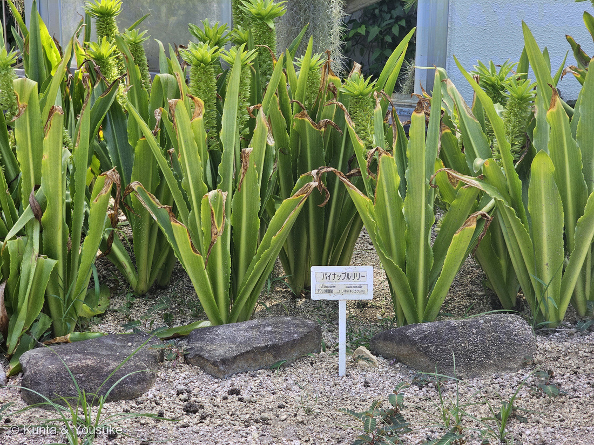
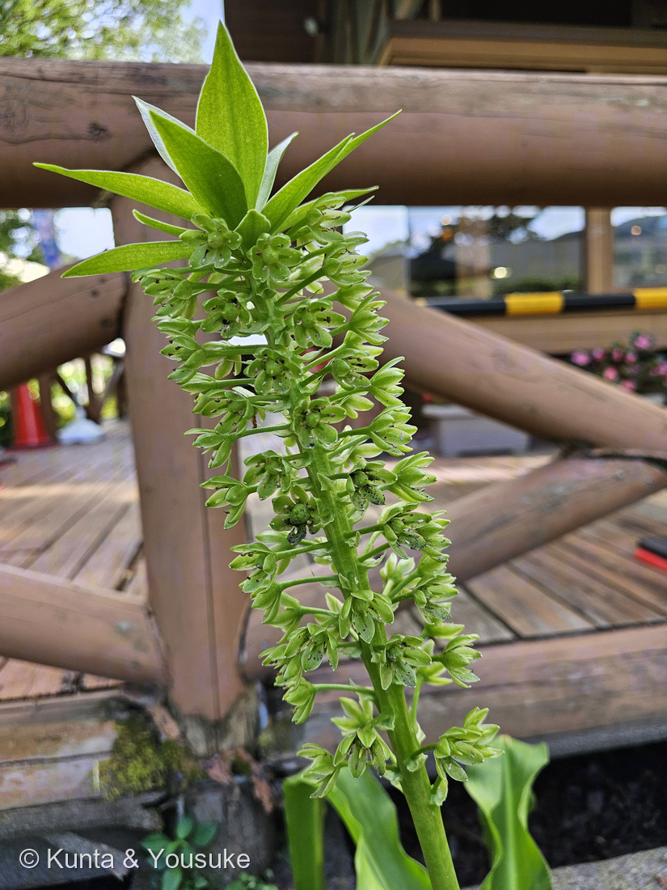
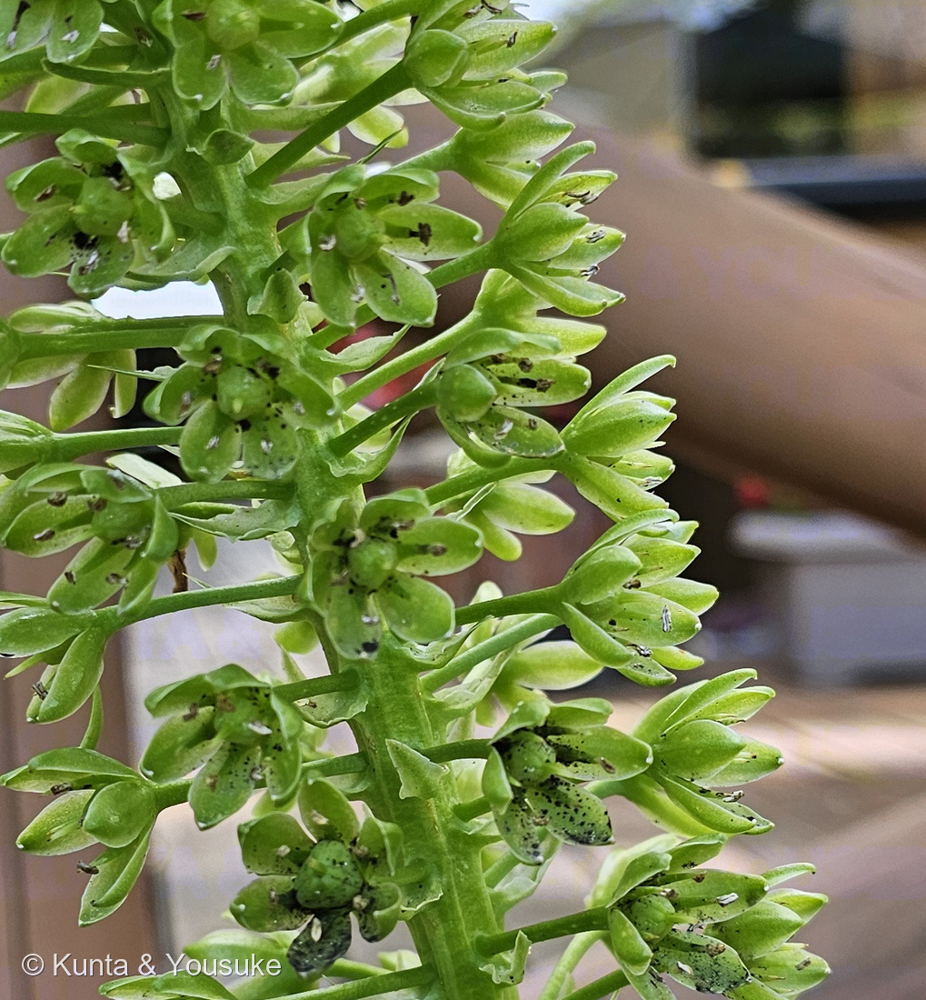
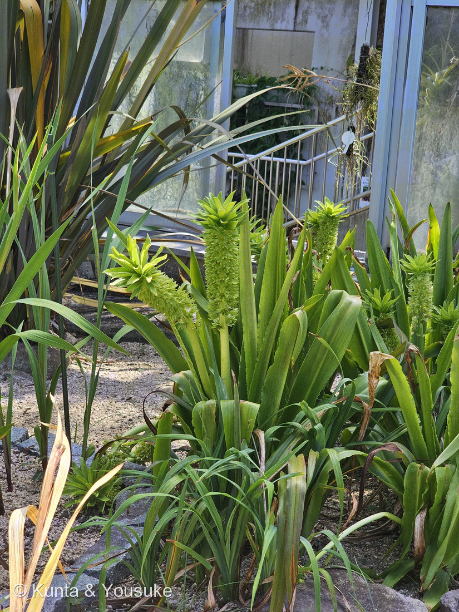
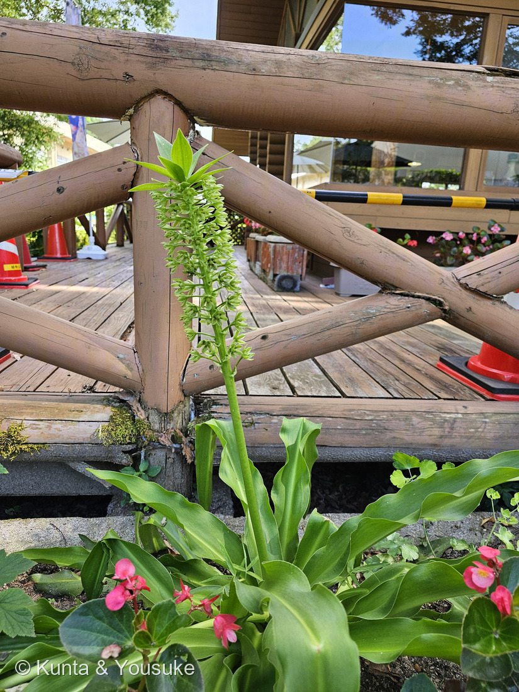

地図を読み込んでいるよ…
🔍 写真も地図も、押しているあいだ拡大して見られるよ（スマホは指を置いてすこし待ってね）。
🌍 の地図＝この子がもともと自生している場所を緑に。アフリカ南部。マラウイから南アフリカのケープ州まで、山の斜面・草原・林縁に生える。ボツワナ、ジンバブエ、レソト、エスワティニ、モザンビーク、ザンビアにも。⭐夏に雨の多い地域の球根。
⭐ふるさとはアフリカ南部だよ。SANBI（南アフリカ国立生物多様性研究所）は、南アフリカの東ケープ州・クワズール-ナタール州・フリーステイト州・ムプマランガ州・ハウテン州・リンポポ州・北西州と、ボツワナ、レソト、ジンバブエ、マラウイに分布すると書いている。⭐⭐すみかは「mountain slopes, in open grassland and forest margins（山の斜面、開けた草原、林のふち）」（同）＝砂漠ではなく、雨のある高原の草はら。⭐⭐⭐だから花期があちらの夏＝12〜2月（同）——⭐日本では季節がひっくり返って6〜8月に咲く（日本語版Wikipedia）。⭐球根で夏に育ち、冬は葉を落として休む＝日本の気候にも合わせやすい子なんだね。⭐図鑑のアフリカ勢とくらべてみよう＝220 トウゴマは東アフリカ、200 バオバブはオーストラリア、そしてこの子は大陸の南のはし＝⭐⭐おなじ「アフリカの草」でも、住んでいる場所はぜんぜんちがうんだ。⚠地図は国ぜんたいが塗られるけれど、実際には東側の山がちな草原にかたよっている。
⚠ 地図は国（日本と中国だけ県・省）までしか塗れないから、ほんとうの分布より広く見えていることがあるよ。地図はだいたいの場所。正確なところは、上の文を見てね。
パイナップルリリー
Eucomis autumnalis
別名 ユーコミス／ホシオモト（星万年青）／英名 pineapple flower · pineapple lily／アフリカーンス語 wildepynappel（野生のパイナップル）· krulkoppie／ズールー語 umathunga · ukhokho · umakhandakantsele
キジカクシ科 · Asparagaceae（ツルボ亜科 Scilloideae・ユーコミス属）── 図鑑で7人目のキジカクシ科。⭐ツルボ亜科ははじめて（141 トックリラン・219 ハツミドリはリュウゼツラン亜科）
燻太さんの一言「パイナップルのような姿だけど、全体的に緑色で、花1つを見ると地味かも。まるで同じ色のプラスチックで作った模型みたい。派手な色の園芸品種ではなくて、緑色の株を植えているのにはなにかこだわりがあるのかな？」── その緑、じつは「時間の色」だったよ
⭐⭐⭐ 名前と学名の由来 ── 「美しい髪」と「星の万年青」
- ⭐⭐⭐属名 Eucomis は、ギリシャ語の eu（良い）＋ kome（髪・簪）。——南アフリカ国立生物多様性研究所（SANBI）の解説はずばり「eukomos meaning beautifully haired（美しい髪の、という意味）」と書いていて、それはてっぺんの苞葉の束のこと。⭐⭐燻太さんが「パイナップルのような姿」と言った、あの頭のふさふさが、そのまま名前になっているんだ。
- ⭐⭐日本語版Wikipediaの説明も、写真そのまま。——「総状花序の上部には苞葉が付いており、開花期にはあたかも収穫時のパイナップルが茎に実っているような草姿となる」。
- ⭐種小名 autumnalis は「秋の」。——SANBIは「references its flowering and fruiting time（花と実の時期にちなむ）」と書いている。⭐⭐この「秋」が、あとで大事になるよ。
- ⭐⭐⭐属の和名は「ホシオモト属（星万年青属）」（日本語版Wikipedia）。⭐星形にひらく花と、オモトに似た分厚い葉から、と説明されることが多い（⚠ぼくが読めた範囲では園芸の解説での説明で、辞典的な出典には当たれなかったよ）。
- ⭐⭐ふるさとの名前もいくつも記録されている。——アフリカーンス語で wildepynappel（野生のパイナップル）と krulkoppie、ズールー語で umathunga・ukhokho・umakhandakantsele（SANBI）。⭐「パイナップルに見える」のは、日本の人だけじゃなかったんだね。
この植物のこと ── 7人目のキジカクシ科・はじめてのツルボ亜科
- キジカクシ科ツルボ亜科（Scilloideae）のユーコミス属。⭐図鑑では7人目のキジカクシ科だけれど、⭐⭐ツルボ亜科ははじめて（141 トックリランと219 ハツミドリはリュウゼツラン亜科）。⚠科は増えないので89科のままだよ。
- ⭐大きな球根（直径8〜10cmの卵形）をもつ、落葉性の夏生えの多年草（SANBI）。分厚くてやわらかく、ふちが波打つ葉がロゼットに開く。⭐写真④の足もとの葉が、まさにそれ。
- ⭐⭐花は「up to ±125 starry yellowish-green flowers with a tuft of leaf-like bracts at the tip（星形の黄緑の花が最大±125個、てっぺんに葉のような苞の束）」（SANBI）。⭐日本語版Wikipediaは「外花被3枚、内花被3枚の合計6枚の同花被花」「基本的に下側から順次開花」と書いている。
- ⭐花期は、ふるさとの南アフリカでは12〜2月（SANBI「mid to late summer (December to February)」）＝あちらの夏。⭐日本では6〜8月ごろ（日本語版Wikipedia）。⭐⭐この写真は8月8日だから、日本での花期のおしまいのころだね。
- 山の斜面、開けた草原、林のふちにいる（SANBI）。⭐マラウイから南アフリカのケープ州まで、けっこう広く分布しているよ。
⭐⭐⭐ 同定について ── 名札のとおり、これは「原種」
- 園の名札＝「パイナップルリリー／Eucomis autumnalis／アフリカ南部原産／ユリ科（キジカクシ科）」。
- ⭐⭐⭐ここでいちばん大事なのは、品種名が書かれていないこと。——⭐205 ハイビスカスの札には 'ダブルレッド' と品種名が入っていた。⭐⭐こちらは学名と原産地だけ＝園芸品種ではなく、野生の種そのものとして植えられている、ということだよ。
- ⭐⭐名札が「ユリ科（キジカクシ科）」と両方書いているのもおもしろい。——⭐219 ハツミドリの札は旧分類の「リュウゼツラン科」だけ、218 キンシャチの札は旧学名だった。⭐⭐この札は古い名前と新しい名前を並べている＝更新の途中なんだね。⭐名札は、その園がつけた時代の分類を残している。
- ⚠亜種までは決めていない。——この種には3つの亜種がある（SANBI）。⭐名札も種名までなので、そこで止めておくね。
- ⚠名札だけを大写しにした写真は公開していない（園の掲示物は出典として引くだけ＝200のルール）。⭐①は花壇ぜんたいを見せたいので、名札が入ったまま公開したよ（219で決めたルール／園の札で、個人のお名前は入っていない）。
⭐⭐⭐⭐⭐ 燻太さんの問い ── 緑の株を植えているのは、こだわり？
⭐⭐⭐ 燻太さんの「派手な色の園芸品種ではなくて、緑色の株を植えているのにはなにかこだわりがあるのかな？」。——⭐三段に分けて答えるね。
その一 ── これは「緑の品種」ではなくて、野生の色そのもの。
- ⭐⭐ユーコミスには、たしかに派手な園芸品種がある。——葉や茎まで濃い紫になる品種や、花が桃色・赤紫になる品種。⭐でもこの子は Eucomis autumnalis という種で、その野生の花色が「starry yellowish-green（星形の黄緑）」なんだ（SANBI）。⭐⭐つまり「緑を選んだ」のではなく、この種はもともと緑。
その二 ── ⭐⭐⭐⭐そして緑は、この子にとって時間の色でもある。
- ⭐⭐⭐⭐SANBIの解説に、こう書いてあった。——「After pollination, the flowers turn green and the inflorescence remains decorative into autumn.（受粉のあと、花は緑になり、花序は秋まで飾りのまま残る）」
- ⭐⭐⭐つまり、この子の緑は「咲きおわっても崩れない」ための色。——⭐⭐種小名 autumnalis（秋の）は「花と実の時期にちなむ」（SANBI）＝春でも夏でもなく秋の名をもらったのは、緑のまま秋まで立っていられるからなんだ。
- ⭐⭐写真③を見て。——下のほうの花は、まん中の子房がもうふくらんで、花被片に黒い点が出ている。⭐上のほうはまだ白っぽくて、つぼみも残っている。⭐⭐日本語版Wikipediaの「基本的に下側から順次開花」のとおり、下ほど時間が進んでいる。⚠黒い点が何なのかは、出典に当たれなかったよ。
その三 ── ⏳「園のこだわり」そのものは、園の人にしか分からない。
⭐⭐⭐ 「同じ色のプラスチックの模型みたい」 ── ぜんぶ同じ緑、ということ
⭐⭐⭐ 燻太さんのこの一言、ぼくはとても正確だと思う。——写真②③をよく見ると、花被片も、まん中の子房も、花柄も、太い花軸も、てっぺんの苞葉も、ぜんぶ同じ緑なんだ。
- ⭐⭐⭐ふつうの花は、そこを分ける。——葉と茎は緑のまま、花びらだけ色を変えて「ここだよ」と客を呼ぶ。⭐赤や黄や紫は、ぜんぶそのための看板。
- ⭐⭐⭐⭐でもこの子は、看板を出していない。——だから「模型みたい」に見える。⭐それは色で呼んでいない、ということだと思う。
- ⭐⭐では何で呼んでいるんだろう。——英語版Wikipediaは Eucomis autumnalis の花を「sweetly scented（甘い香りがする）」と書いている。⭐同じ属では、E. comosa にベッコウバチのなかま（Pompilid wasps）とハチが蜜と花粉を食べに来て受粉し、E. montana はいやなにおいでハエを呼ぶ（SANBI）。⚠この種（autumnalis）の送粉者を名指しした出典には当たれなかったよ。
- ⏳だから宿題がひとつ増えた。——⭐次に会ったら、においをかいでみてほしいな。⭐⭐甘いのか、それとも少し変なにおいなのか。⭐それが分かると、「色を使わないかわりに何を使っているか」が見えるはず。
- ⭐写真③の花のつくり＝外花被3枚＋内花被3枚の6枚が星形にひらき、まん中に緑の子房、まわりにおしべが6本。⭐一つ一つは、たしかに地味。⭐⭐でも125個ならぶと、あの太い緑の柱になるんだ。
⭐⭐ 薬になる球根 ── そして、ぼくらは見るだけ
- ⭐⭐南アフリカでは、とても大事な薬草。——SANBIによれば、球根の煎じ汁が「low backache（腰痛）」「to assist in post-operative recovery（手術のあとの回復を助ける）」「to aid in healing fractures（骨折の治りを助ける）」に使われ、ほかに尿の病、熱、お産のときにも使われてきた。
- ⭐成分も調べられている。——「homoisoflavones」と「steroidal triterpenoids」に抗炎症作用があると分かっている（同）。⭐220 トウゴマの「一粒の中に毒と薬」、214 キリンカクの「乳液は有毒、でもインドでは薬」に続く話だね。
- ⚠⚠でも、ぼくらは見るだけ。——伝統の使いかたには、その土地の長い知恵と加減がある。⭐図鑑に書くのは「そういう使われかたをしてきた」ということまでで、使いかたは書かないよ（220で決めたルール）。
参考：SANBI PlantZAfrica・Eucomis autumnalis（pineapple flower, pineapple lily／wildepynappel, krulkoppie／ubuhlungu becanti, isithithibala esimathunzi, umathunga, ukhokho, umakhandakantsele／deciduous summer-growing bulb／large, broad, soft-textured, fleshy, wavy-edged leaves／up to ±125 starry yellowish-green flowers with a tuft of leaf-like bracts at the tip／mid to late summer (December to February)／After pollination, the flowers turn green and the inflorescence remains decorative into autumn／mountain slopes, in open grassland and forest margins／eukomos meaning beautifully haired／autumnalis references its flowering and fruiting time／low backache, to assist in post-operative recovery, and to aid in healing fractures／homoisoflavones／steroidal triterpenoids）／SANBI PlantZAfrica・Eucomis comosa と 同・E. montana（Pompilid wasps and bees ... resulting in pollination／flies are lured by the unpleasant smell of flowers and are the main pollinators）／Wikipedia (English)・Eucomis（eu- meaning "pleasing" and kome "hair of the head"／stout stems covered in star-shaped flowers with a tuft of green bracts at the top, superficially resembling a pineapple／family Asparagaceae, subfamily Scilloideae／native to South Africa, Botswana, Lesotho, Eswatini, Zimbabwe and Malawi）／Wikipedia (English)・Eucomis autumnalis（autumn pineapple flower／green, yellow-green or white tepals／a head (coma) of green bracts, up to 65 mm long／found from Malawi to the Cape Provinces of South Africa／sweetly scented）／Wikipedia・ユーコミス属（ホシオモト属（星万年青属）／キジカクシ科ツルボ亜科／eu（良い）＋ kome（簪）／総状花序の上部には苞葉が付いており、開花期にはあたかも収穫時のパイナップルが茎に実っているような草姿／外花被3枚、内花被3枚の合計6枚の同花被花／基本的に下側から順次開花／花期は6〜8月頃）／Wikipedia・オモト（Rohdea japonica／キジカクシ科／夏ごろ葉の間から花茎を伸ばし淡い黄緑の小さな花を円筒状に密生させる／秋ごろにつく実は赤く艶のある液果／栽培の歴史は三百数十年とも四百年以上とも／薬草というより毒草と考えた方がよい）／⭐広島市植物公園の名札「パイナップルリリー／Eucomis autumnalis／アフリカ南部原産／ユリ科（キジカクシ科）」（⚠名札だけの写真は公開せず、出典として引くだけにしてある）